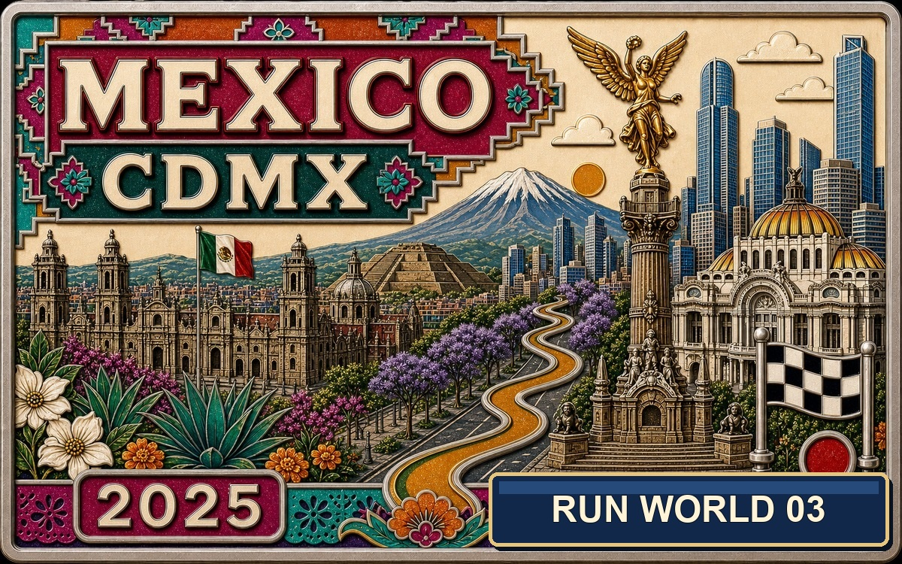

Run50 Stories · English
English Stories
English editions of the Run50 story library: U.S. state marathons, RunCN China stories, and RunWorld trips, organized with the same covers and series structure as the Facebook feed.
Run50 · U.S. States
Run50 U.S. State Stories
Start with State 1 and follow the U.S. project in order. Revisit races sit beside their original state.

Kentucky gave me my first marathon in North America
Race date: November 8, 2020. A socially distanced Louisville Marathon moved into Beckley Creek Park, with staggered starts, a quiet forest course, and a hard final 12 kilometers.

Cleveland gave me a cold 26.2-mile run from night into daylight
Race date: October 24, 2021. State 2 of Run50 started in the dark near Tower City, crossed Lake Erie light and industrial bridges, and ended with a medal that looked exactly like Cleveland felt.

New York turned 26.2 miles into one enormous five-borough street party
Race date: November 7, 2021. State 3 of Run50 and my first World Marathon Major: Staten Island, the Verrazzano Bridge, Brooklyn, Queens, Manhattan, and Central Park.

San Francisco turned 26.2 miles into fog, bridge wind, hills and bay light
Race date: July 24, 2022. State 4 of Run50 crossed the Golden Gate Bridge, ran through fog and sudden sun, and ended with a medal beside the bay.

Indianapolis turned a rainy one-day marathon into a way back to running
Race date: November 5, 2022. Run50 State 5 at the 15th Indianapolis Monumental Marathon: autumn rain, Monument Circle, run-walk intervals, and a 4:55:12 finish.

Honolulu made a first marathon feel like an all-day island celebration
Race date: December 11, 2022. State 6 of Run50 at the 50th Honolulu Marathon: fireworks, Waikiki, Diamond Head, no cutoff, and 47's first marathon finish.

Atlanta made 26.2 miles feel like an Olympic city walk
Race date: February 26, 2023. State 7 of Run50 in Atlanta: Olympic rings, Coca-Cola, CNN, hills, and a long road-trip weekend.

Kentucky Derby Marathon: fourth time at home, finally under four
A hometown Louisville Derby Marathon with Derby-season color, Churchill Downs, Iroquois Park, running friends, and a long-awaited sub-four.

Cincinnati's Flying Pig turned into a Flying Fish in the rain
Race date: May 7, 2023. Cincinnati's Flying Pig Marathon brought bridges, hills, rain and a full Queen City tour.

Denver gave me 26.2 Mile High miles, stadium grass and mountain light
Race date: May 21, 2023. State 8 of Run50 in Denver: Colfax, stadium grass, mountain light and Mile High air.

Alaska had no aurora, but Anchorage still gave me a wild 26.2 miles
Race date: June 17, 2023. State 9 of Run50 in Anchorage: no aurora, but Alaska mountains, coastal trails and summer-solstice light.

St. Joseph made Missouri feel like a first-edition marathon road trip
Race date: September 23, 2023. State 10 of Run50 at the inaugural St. Joseph Missouri Marathon: parkways, heat, hills and a wedding weekend.

Chicago gave me my second World Marathon Major and State 11 of Run50
Race date: October 8, 2023. The 45th Chicago Marathon: Grant Park, the L, Chinatown, roaring crowds, Kelvin Kiptum's world record day, and a second finish beside Siqi.

Scorching October sun gave me my slowest marathon of the year in Music City
Race date: October 28, 2023. Running U.S. State 12 at Nashville, TN. A hot city greenway run with a minor league baseball stadium finish, crossing the Cumberland River, and surviving a PW.

West Virginia gave me a touchdown stadium finish to break 4 hours
Race date: November 5, 2023. Running U.S. State 13 at Marshall University in Huntington, WV. A beautiful autumn loop race with a football stadium finish, placing a flower on the 1970 team plane crash memorial, and a PR.

San Antonio turned a Spurs trip into my Texas marathon story
Race date: December 3, 2023. State 14 of Run50, from the Alamo and River Walk to Fort Sam Houston, greenway miles, one late Texas hill and a 4:12 finish.

A Florida week from Key West beaches to Disney Marathon
Run50 State 15 as one Florida arc: Key West New Year, Orlando speedrun, Universal, and Disney Marathon.

Miami gave me a wild 26.2 miles in a CR7 shirt, right in Messi's backyard
Race date: January 28, 2024. A wrong-date plane ticket turned a finished state into an accidental double-run, complete with construction zones, heat-stroke miles, and a Portuguese connection.

Oak Island sent Run50 toward the Atlantic with a medal bigger than my face
A North Carolina coast marathon with winter legs, ocean wind, Atlantic light, and a medal that refused to be subtle.

Little Rock gave me a 26.2-mile run with the massive dinosaur medal
Race date: March 3, 2024. A Southern weekend road trip down to Arkansas for the legendary dinosaur medal, looping the aviation giants and wooded forest parks.

Too Slow for Boston gave me a 26.2-mile run with the stubborn mule medal
Race date: April 14, 2024. A neighborhood loop road race designed for those who can't qualify for Boston—featuring trailer RV camping, a clicker lap-counting system, and a trophy for the slowest.

Michigan made me run six meadow loops through late-summer fire
Race date: August 25, 2024. Run50 State 21 at Millennium Meadows Marathon, with a river sunrise, six park loops, a car-scrape mishap, and a 4:44 finish.

Run50 State #22 | New Hampshire: Clarence DeMar Marathon
From Niagara Falls into New England foliage, this was a small-town marathon through Keene, quiet roads, autumn forests, and a campus finish.

Run50 Kentucky Extra | Louisville Marathon 2024: A Doctoral Finish Line
Four years after my first U.S. marathon, I returned to Floyds Fork for a hometown loop that closed the PhD chapter.

Run50 State #23 | Louisiana Marathon: Baton Rouge and the French South
The first race of 2025 stitched together a Dallas layover, New Orleans, Baton Rouge, LSU purple-and-gold, and a warm Finish Fest.

Run50 State #24 | Virginia: Blue Ridge Marathon
America's Toughest Road Marathon turned 26.2 miles into a mountain fight through Roanoke and the Blue Ridge.

Run50 Kentucky Extra | Derby Marathon 2025: My 50th Marathon
A hometown Derby weekend with a Friday 5K, Saturday marathon, three medals, one cake, and my 50th marathon finish.

Run50 State #25 | North Dakota: Fargo Marathon
A long drive to the northern plains, a pink-sky start, cornfields, heat, and the halfway mark of the Run50 quest.

Run50 State #26 | Kansas: Hell on Gravel Marathon
Wind, cattle, wheat fields, and gravel roads turned a tiny ten-runner marathon into a champion's story.

Run50 State #27 | Vermont: Mad Marathon
A drive into Vermont's Green Mountains for a summer race of barns, flags, village roads, and rolling countryside.

Run50 State #28 | Alabama: Rocket City Marathon
A cold-weather Rocket City run through Huntsville, aerospace history, a giant rocket, and a year-end reunion with friends.
RunCN · China
RunCN China Stories
China race weekends and travel stories, using the same medal-style covers as the Facebook feed.

The steel tank story: how a heavy football kid found marathons
From the steel tank on the football field to a proud son at the Harbin Marathon finish.

Three 2017 races became a pilgrimage through Guang'an, Yichang, and Changsha
Guang'an Marathon, Yichang Half, Changsha Marathon, and a pilgrimage threaded through Deng Xiaoping, a mentor, and Mao.

Xiamen gave my 2018 season a rain-soaked, unforgettable opening
A rainy Xiamen Marathon, a Zengcuo'an reunion, and the first full-marathon chapter of 2018.

Three spring races bloomed under cherry trees in Wuhan and Wuxi
Wuhan, Wuxi, cherry blossoms, a college marathon, and three spring race notes.

Wuhan Marathon connected a century of city fire and running energy
1911 memory, East Lake, Han Marathon volunteers, and Wuhan at full volume.

Xi'an turned a city-wall race into a walk through three thousand years of China
Rain on the wall, the Qin plain, Terracotta Warriors, Huashan, and Hukou Falls in one heavy Chang'an travelogue.

Lanzhou Strong: a marathon at the edge of the Yellow River and the Hexi dream
The Yellow River, beef noodles, Zhongshan Bridge, Gaolan Mountain, and a Lanzhou Marathon with roaring local energy.

Guiyang turned a brutal climb into a journey through Yelang, Wang Yangming, and Fanjing Mountain
Guiyang Marathon heat and climbing, Qingyan, Yelang Valley, Yangming Cave, and Fanjing Mountain as one southwestern lesson.

Haikou became an unfinished running story by the sea
Haikou arcades, Hainan sea wind, an unfinished race, and a city story still worth keeping.

Wuhan and the Han Marathon became my private memory of leaving home
Han Marathon, Wuhan University, River City, pre-graduation homesickness, and a private Wuhan memory.

Dalian turned my first real trail race into a Northeastern coming-of-age story
Dalian's west coast, the Yellow Sea and Bohai Sea divide, a trail race, and a hill story for the Northeast.

A delayed Wuhan graduation album became a time capsule
Wuhan University graduation, family visiting Wuhan, East Lake, and a photo album that arrived two years late.

Harbin Marathon brought me back to the black soil and Songhua River
Songhua River, black soil, Northeastern home, and a delayed Harbin Marathon memory.

A West Lake half marathon turned into a lakeside reset and an unexpected encounter
West Lake, Qingzhiwu, Westlake University, and a half marathon that helped me restart.

Climbing 3,398 steps to the top of China's tallest skyscraper
Race date: November 24, 2019. Scaling 119 floors and 3,398 steps of the Shanghai Tower to reach 632m height during a stressful visa waiting period.

Ningbo turned a lakeside marathon into a warm farewell
Dongqian Lake cycling, a 4:08 full marathon, curry with an old friend, and a post-race walk into Fenghua history.

Xiangyang gave me a marathon with a finish I did not see coming
Race date: October 19, 2025. A Three Kingdoms city, the Han River, old city walls, Tang-style palaces and an unexpected 3:57 finish.

Guilin turned a beautiful marathon into a full-sun test
Race date: November 16, 2025. Li River views, karst hills, spray trucks, a Messi jersey chase, and my family waiting at the finish.

Hong Kong turned a marathon into a tunnel-and-bridge city tour
Race date: November 23, 2025. A 5 a.m. start, expressway tunnels, Victoria Harbour wind, Tseung Kwan O Bridge, and one last uphill punch.
RunWorld · Global
RunWorld Stories
International marathon trips outside the U.S. and China, sorted by RunWorld entry order.

Singapore brought me back to a ten-year promise and a midnight marathon
A ten-year Singapore promise, campus pilgrimage, Marina Bay night, and a Sundown Marathon from midnight into morning.

Bangkok kept moving from temple light to marathon night
A Bangkok running weekend through temple light, night streets, the Erawan Shrine, and the warmth of Thailand.

Mexico City gave me a 26.2-mile high-altitude plateau challenge
Race date: August 31, 2025. 2,240m altitude down Reforma to the Zócalo, followed by sun-drenched pyramids and a ride home with a carful of friendly locals.

Pisa turned a marathon into a Tuscan art-school road trip
Race date: December 21, 2025. The Leaning Tower, Arno River, Tuscan villages, Ligurian Sea, and an Italy trip through Venice, Milan, Florence and Rome.